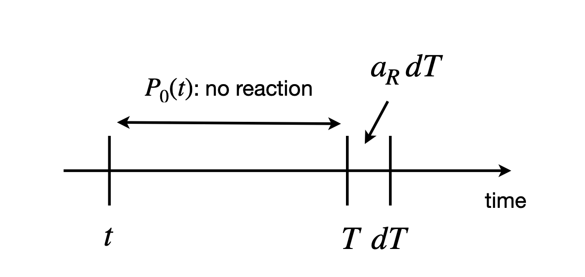
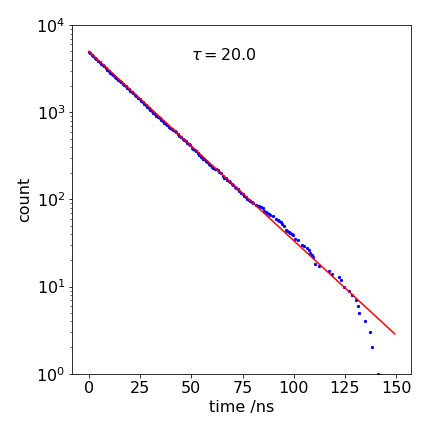
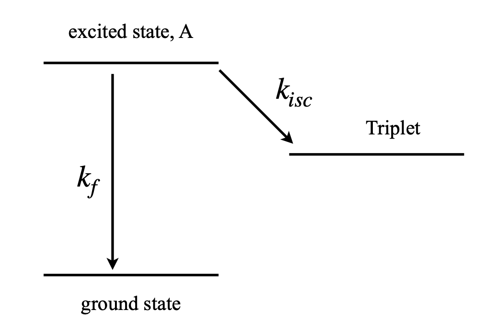
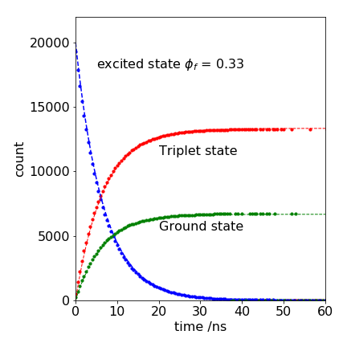

2 Solving rate equations. The Gillespie method
Contents
2 Solving rate equations. The Gillespie method#
%matplotlib inline
import numpy as np
from sympy import *
init_printing() # allows printing of SymPy results in typeset maths format
import matplotlib.pyplot as plt
plt.rcParams.update({'font.size': 16}) # set font size for plots
2.1 Concept and motivation#
A Monte Carlo method of solving differential equations has been developed by Gillespie (1977, 2007) and is just as applicable to chemical reactions as it is to describing S-I-R diseases or predator - prey populations. This method is equivalent to any other numerical method in the sense that it is purely mathematical, no science enters into the method of solution, that is all done when the rate equations are written down. In comparison, in Section 3, a heuristic way of solving problems will be described, and in this case, the science behind the processes involved is an essential part of the method.
When considered at the level of individual molecules, any chemical reaction has relatively long time periods during which no reaction is possible followed by small time periods when reaction occurs. The Gillespie method calculates these two times and uses them as the basis of the method to solve the rate equations. Bimolecular chemical reactions rarely occur on first contact of the two reactants because there is usually an energy barrier, the activation energy, between reactants and products. Many millions and perhaps thousands of millions of collisions are needed before reaction occurs if the activation energy is much larger than thermal energy and this time is far longer than the time it takes to cross the reaction barrier. Even if a reaction occurs on first contact, there are periods during which no reaction is possible because the molecules are separated from one another. In a first-order, solution - phase reaction, such as a cis - trans isomerization, many collisions with solvent are needed to give the reactant molecule enough energy to surmount the energy barrier between reactant and product. Similar unreactive periods occur even in a molecule isolated from others in the gas phase. The molecule may have enough total energy to react but this is may be spread among all of its \(3N - 6\) vibrational modes. The energy must flow out of these modes and find its way into the reactive bond and this takes time.
If the reacting molecules are considered individually, the various times that would be observed between reactions have a Poisson distribution, which is a distribution of many events with each having a low probability, see chapters 1 & 13, the probability of a reaction is therefore also described by a Poisson distribution. Monte Carlo methods mimic the Poisson behaviour of molecules by considering the chance (probability) that no reaction will occur during a certain period of time, which is followed by another smaller time interval during which a reaction does occur. The method, therefore, involves working out these two probabilities and multiplying them together.
2.2 The Gillespie method#
When two species \(A\) and \(B\) react, \(A + B \to product\), the rate of reaction is \(k\mathrm{[A][B]}\) where \(k\) is the rate constant and \(\mathrm{[A]}\) and \(k\mathrm{[B]}\) the concentrations at any time during the reaction, which clearly change with time. To work out what happens in each small time interval means calculating the change in the number of reactant molecules in a given volume. Doing this means calculating two things. The first is the time at which any of possibly several reactions will occur, and the second is to decide which reaction this will be. In the reaction \(A + B \to product\), there is only one type of reaction but there are very many schemes where there are two or more reactions; for example, the photo-dissociation of halocarbons with UV light and subsequent reactions to destroy ozone.
Given such a reaction scheme, the first step is to decide what reaction will happen next given the current state of the reaction at time \(t\). At the level of considering individual molecules, once the reaction has started, it does not follow sequentially as shown in the scheme. This only happens when a whole ensemble of molecules, typically as large as Avogadro’s number is examined, and then normal kinetic equations apply because of the averaging over the many events that occur. In any given time interval when considering molecules one at a time, it is not possible to predict exactly which reaction will happen next. It is quite possible, for instance, that several \(\mathrm{Cl+O_3}\) reactions may occur before either of the other two. The best that can be done is to guess the outcome, and repeat the calculation many times and this approach is now described.
Suppose that the reactions are labelled with a number \(R\) that represents reaction 1 or 2 or 3 etc. The chance of a reaction of type \(R\) occurring will be defined as
Specifically, this is the probability that a reaction of type \(R\) occurs in time interval \(T\) to \(T + dT\) in the reaction volume, given the current state of all reactions at an earlier time \(t\). The values of \(a_R\) can be easily worked out, and this is shown later. What is now needed is the probability \(P_0(T)\) that no reaction of any type occurs up to time \(T\) past the present time \(t\), multiplied by the probability that only a reaction of type \(R\) occurs in the small time interval \(T \to T + dT\), which is defined as \(a_RdT\). The probability of reaction type \(R\) happening is therefore
and shown schematically in figure 4.

Figure 4. Calculation of reaction probability.
To calculate the probability of no reaction occurring, consider any small interval \(d\tau\) after some arbitrary time \(\tau\), making an interval \(\tau \to \tau + d\tau\). The probability of no reaction is then
where the summation is over all \(n\) reaction types \(R\). The summation is made because this gives the chance that any one of the \(R\) reactions will occur, and therefore one minus this number is the chance that no reaction occurs. Rearranged, this equation gives
and in the limit of a small time interval \(d\tau\), it becomes the true derivative \(\displaystyle \frac{dP_0}{d\tau}=-\sum_{R=1}^na_R\).
For clarity only, a notational change is now made so that
and therefore \(\displaystyle \frac{dP_0}{d\tau}=-a_0\).
The chance of no reaction up to time \(T\) is found by integrating, and is \(\displaystyle P_0(T)=e^{-a_0T}\).
The final result for the probability of reaction \(R\) occurring at time \(T\) is the chance of no reaction up to \(T \) multiplied by the chance of reacting at \(T\), which is \(a_R\), giving
an expression that shows that these times are Poisson distributed. Equation 9 is a joint probability density function, as it is the chance that reaction occurs in the time interval and that it will be reaction \(R\).
Two terms now remain undefined. The first is the individual \(a_R\) and their sum \(a_0\), and the second determines which reaction happens next. Calculating \(a_R\) is very easy, as each \(a_R\) is the product of the number of molecules present in a reaction of type \(R\) multiplied with the rate constant per unit volume.
If there is just a single reaction \(\mathrm{A} \overset{k_1}\longrightarrow \mathrm{B}\) then \(a_1=k_1N_A\) where \(N_A\) is the number of \(A\) molecules present at time \(T\).
If the reaction is \(\mathrm{A+B} \overset{k_2} \longrightarrow \mathrm{C}\) then \(a_2=k_2N_aN_B\) and if both reactions are present in the overall reaction scheme which would then be
In the special case where a reaction combines two identical molecules \(\mathrm{A+A} \overset{k_2} \longrightarrow \) the number of indistinguishable combinations, i.e. the number of distinct A-A pairs of the two species must be calculated and this makes
Normally, in dealing with chemical kinetics, \(N_A\) is so vast that \(\displaystyle a = k_2\frac{N_A^2}{2}\), but in the Monte Carlo simulations, \(N_A\) is small because individual molecules are dealt with, and the exact formula must be used. Thus, macroscopic, (kinetic), chemical equations are only valid when deviations from the Poisson distribution are negligible.
2.3 Outline of method and example calculation of excited state decay#
The outline plan for the Gillespie algorithm is actually quite simple
(1)\(\quad\) Define the initial amounts of each species.
\(\qquad\)Define the arrays of data points to hold results.
\(\qquad\)Set the maximum time.
\(\qquad\)Set the time to zero, \(t = 0\).
(2)\(\quad\) Start a loop around the calculation until the time is up or no molecules are left.
\(\qquad\)Calculate \(a_1,\;a_2,\;a_3\) etc. and \(a_0 =a_1 +a_2 +a_3 +\cdots\)
\(\qquad\)Calculate time \(\displaystyle T = -\frac{1}{a_0}\ln(r)\)
\(\qquad\)Increment time \(t = t + T\)
\(\qquad\)Calculate which reaction occurs: if a random number falls between 0 and \(a_1/a_0\), reaction 1 occurs, and so forth for other reactions.
\(\qquad\)Add or subtract numbers of molecules from the totals, depending on which reaction has occurred and its stoicheiometry.
\(\qquad\)Store the results.
(3)\(\quad\) Continue the loop until finished.
The first calculation attempted is that of a simple isomerization, or the radioactive decay of an atom, or the decay of an excited state. The scheme is
The Gillespie method is illustrated in the next algorithm. Much of this is involved in checking that something has not gone wrong, such as a negative number of molecules, and in organizing the data to plot it. The method produces a series of times and the number of molecules of each species at each time; however, the times produced are randomly distributed and to plot them a histogram has to be made containing a number of time bins. In the calculation, \(100\) bins are chosen; the reaction rate constant is \(1/20\), so the lifetime of the reaction is \(20\), and a total time of \(150\) is chosen. You can, of course, change these numbers and a small amount of experimenting is usually necessary to get the calculation as you might want it. No time units are given. This is for you to decide, they could be seconds to picoseconds as appropriate to the reaction. The loop continues until either the time calculated, when converted into an index number for storing the data, has reached its maximum value, or the number of molecules has reached zero, in which case no more reaction is possible.
## Algorithm: Monte-Carlo Gillespie Method.
#fig1= plt.figure(figsize=(6, 6)) # remove # symbol in each line to see plot
#plt.rcParams.update({'font.size' : 16})
bins = 500 # number of bins
maxt = 150.0 # time in ns
kf = 1/20.0 # rate constnat 1/ns
A0 = 5000 # initial number of molecules
Acount = np.zeros(bins,dtype=int) # array to save values
dtime = np.zeros(bins,dtype=float)
for i in range(bins):
dtime[i] = (i+1/2)*maxt/bins # generate time points
nA = A0
t = 0.0
Acount[0] = nA # first data point
indx = 0
while indx < bins and nA > 0 :
a0 = kf*nA # only 1 species so no sum
t0 = -np.log(np.random.random_sample())/a0 # calc time eqn 11
t = t + t0 # increment
indx = int(np.round(t*bins/maxt)) # work out bin number
if indx < bins:
nA = nA - 1 # reduce by 1 molecule
Acount[indx] = nA # save value
pass
pass
#print( Acount[0] )
#plt.scatter(dtime,Acount,color='blue',s=3) # remove first symbols # to see plots
#plt.yscale('log')
#plt.ylim([1,2*A0])
#plt.ylabel('count')
#plt.xlabel('time /ns')
#plt.tight_layout()
#plt.show()

Figure 5. A calculated decay with \(k_f = 1/20 \mathrm{ns}^{-1}\) and a line from the analytical equation, also with the same lifetime to show that the Monte Carlo result is the same, within error. The ‘drop-outs’ at long times appear as missing data points.
The result of a calculation is plotted in Figure 5; the line through the data is an exponential with a \(\tau = 20\) ns lifetime; \(e^{-t/\tau}\). The ‘drop-outs’ in the data at long times (\(\gt 100\) ns) are due to there being too few simulations to fill properly all the time bins and are distinctly un-physical. They are most apparent in a log plot, but in this case only produce a small error that is hardly noticeable on a linear plot, and are an inevitable part of the method; if more time points are used then the drop-outs become more frequent. As they are so noticeable, and clearly unphysical, they can be ignored, if desired. However, they should really be eliminated by starting with more molecules; the only penalty is a longer calculation.
At intermediate times, the limited number of events simulated is also seen as noise on the data, but it is clear that the simulated data is a good match with the theoretical line over about a thousand-fold range of counts. An improved calculation could be made, by starting with a larger initial number or averaging together several single calculations such as this one. The noise on this data is completely different to what would be observed experimentally and to that on Fig. 12.16, which is the result of a simulation of the process.
2.4 Excited state forming triplet#
As a second example, suppose an excited state of a molecule reacts as shown in Figure 6. The excited state decays to the triplet state by intersystem crossing and by fluorescence, to the ground state. The triplet is assumed to have a very long lifetime, so does not convert to the ground state during the time considered in this calculation. The rate constants are \(k_{isc}\) to the triplet and \(k_f\) to the ground state. The population of all three states involved will be calculated. The decay of the excited state is \(\tau = 1/(k_f + k_{isc})\) and this is the lifetime with which the triplet is formed and also that with which the ground state is formed; equivalently the rate constant is \(k_1 = k_f + k_{isc}\). In fact, only two states need be calculated as the total number of all molecules is a constant number, but all state populations will be calculated by way of illustration.
If the triplet or ground state populations are needed, then one molecule is added each time to these populations; initially these are zero. The chance (probability) of going to the triplet is the fraction or yield
and the chance of fluorescing and so returning to the ground state, is the fluorescence yield
The sum of these yields is one. Which state the molecule ends up in is determined by casting a die in the form of a uniform random number in the range \(0 \to 1\). If it is in the range zero to \(\varphi_T\) the triplet is produced; if not, the ground state results and the molecule has fluoresced.
The calculation is shown below and is only slightly modified from that of the last example. The fluorescence rate constant is 1/(20 ns), and the intersystem crossing rate constant \(1/(10\) ns) makes the fluorescence yield \(1/3\), so that \(2/3\) goes to the triplet. The prefix T is used for the triplet, such as Tcount or nT for number of triplets, G for ground state, and A the excited state. As before, a check is made in the ‘while..do’ statement to prevent the population of any state becoming negative. The triplet and ground state cannot become zero, because +1 is always added to their populations. The data is placed into \(200\) bins and is calculated for a total time of \(100\) ns with \(20000\) molecules, initially in the excited state. The units of nanoseconds (ns), need not be explicitly included if we work in these units.

Figure 6. Excited state pathways.
# Algorithm: Gillespie method.
# Excited state decay to triplet and ground state. A* ->G kf , A* -> T kisc
A0 = 20000 # initial number A*
bins = 200
maxt = 100.0 # time in ns
kf = 1/20.0 # rate constant ns^(-1)
kisc = 1/10.0
k1 = kf + kisc
phi= kf/k1 # fluorescence yield
Acount = np.zeros(bins,dtype=int) # arrays to save data
Tcount = np.zeros(bins,dtype=int)
Gcount = np.zeros(bins,dtype=int)
dtime = np.zeros(bins,dtype=float)
for i in range(bins): # work out time bins
dtime[i]= maxt*(i+1/2)/bins
G0 = 0 # initial values ground state G
T0 = 0 # initial triplet
nA = A0 # initial excited state
nG = G0
nT = T0
t = 0.0 # initial time
Acount[0] = nA
Tcount[0] = 0
Gcount[0] = 0
indx = 0 # index refers to histogram bin number
while indx < bins and nA > 0 :
a0 = k1*nA
t0 = -np.log(np.random.random_sample())/a0 # guess new time eqn 11
t = t + t0
indx = int(np.round(t*bins/maxt)) # integer time bin
if indx < bins:
if np.random.random_sample() < phi : # check what happens
nG = nG + 1 # ground state produced add 1
Gcount[indx] = nG
else :
nT = nT + 1 # triplet produced add 1
Tcount[indx] = nT
pass
nA = nA - 1 # remove 1 from excited state
Acount[indx] = nA
pass
pass
## plot data etc.
#plt.plot(dtime,Acount)
#plt.plot(dtime,Gcount)
#plt.plot(dtime,Tcount)
#plt.show()
The results are shown in Figure 7, together with the analytic solution because these equations can be solved analytically. The triplet population increases as
and that of the ground state similarly increases and matches that of the decay of the singlet \(A_0e^{-k_1t}\) but in proportion to the amount entering each state; 2/3 goes to the triplet. The analytic curves are also shown in Figure 7, and they match exactly, except for the ‘drop-outs’ at long times. Fewer drop-outs would be present with a larger initial number of molecules.

Figure 7. Monte Carlo simulation of the decay of an excited state and the appearance of triplet and ground state (circles) together with theoretical curves (dashed lines). The gaps (drop-outs) in the Monte Carlo data occur because of the limited number of trials; 20000 in this example.
Comment on validity#
The term
implies that these numbers are averages in the reaction volume at time \(t\) and should be written as the average of the product, i.e. as
The question then arises as how to deal with this. Two approximations can be made; the first is to assume that \(N_A\) is large compared to 1 and so \(\langle N_A(t)(N_A(t)-1)\rangle \rightarrow \langle N_A^2(t)\rangle \), which seems to be a reasonable and sensible approximation, the next step is more problematic and is
This is a drastic step and assumes that the variance in the number of molecules is zero, i.e. that \(N_A(t)=\langle N_A(t)\rangle\) which means that \(N_A\) is a deterministic process, so that the random nature of the numbers of \(N_A\) entering into the reaction volume is always the same, which is not what was assumed at the outset. (To see that the variance is zero use the definition \(\sigma^2_{N_A} = \langle N_A^2 \rangle -\langle N_A \rangle^2\) where \(\sigma\) is the standard deviation)
In any normal kinetic experiment the number of molecules is vast, \(\langle N_A(t)\rangle \sim 10^{18}\) would not be untypical, so that the fluctuations in the number of molecules is tiny and the approximation made above becomes valid.
Even if there are as few as \(1000\) molecules the relative fluctuation is not too drastic but in experiments using small numbers of molecules, as in the case of many ‘single molecule’ experiments then clearly the rate equation approach needs to be modified.
The final part of the calculation determines which particular reaction step is going to occur and at what time this is done by choosing pairs of numbers that have the distribution \(P(T, R)\) equation 9. Gillespie (1997, 2007) argues that \(P(T, R)\) is equivalent to two distributions, \(P_1\) and \(P_2\);
and which can be determined by choosing two uniformly distributed random numbers, \(r\), each in the range 0 to 1. The equation
generates a random number \(T\) according to the probability density function \(\displaystyle P_1=a_0e^{-a_0 T}\).
Equation 11 produces times that are Poisson distributed, and the time \(T\) is added to the current time of the reaction. The second distribution, \(P_2\), is calculated by choosing a uniform random number according to the probability density function \(a_R/a_0\). For example, the chance that reaction 1, (equation 10), occurs is \(a_1/(a_1 + a_2)\) and for reaction 2 this chance is \(1 - a_1/(a_1 + a_2) = a_2/(a_1 + a_2)\). Which reaction occurs is determined by choosing a random number between 0 and 1 and seeing which of the two regions it falls into. If it falls between 0 and \(a_1/(a_1 + a_2)\), reaction 1 occurs; otherwise, reaction 2 occurs. If reaction 1 occurs, \(\mathrm{A} \to \mathrm{B}\), then 1 is subtracted from the original number of \(A\) molecules in each step of the reaction and 1 is added to the number of \(B\) molecules.
If reaction 2 happens, \(\mathrm{A+B} \overset{k_2} \to \mathrm{C}\) then 1 molecule is removed from each of the numbers for \(A\) and \(B\). How many molecules are added and subtracted, of course, depends on the stoicheiometry of each particular reaction.
In the case of a termolecular reaction \(\mathrm{ A + B + C} \rightarrow \) when the probability of three molecules simultaneously colliding is calculated the probability the chance that this occurs in an infinitesimal time interval \(d t\) is proportional to \(dt^2\) so becomes vanishingly small and thus does not occur with any physical reality. It is often convenient, however, to consider a termolecular scheme as a simplified approximation to a scheme such as \(N_A+N_B \leftrightharpoons X^*; \; X^* + N_C \longrightarrow\)